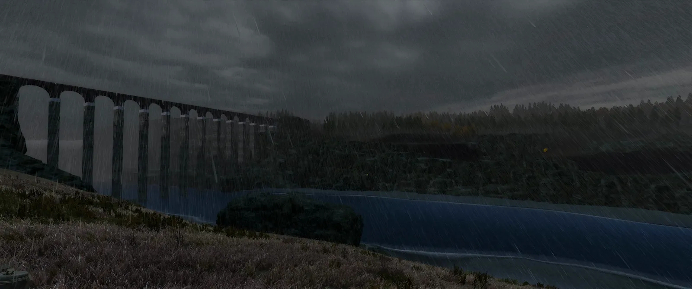

01 / 04
The island after the collapse
Antoria is deserted. The harbour lies abandoned, the infected stand on the coast road, and the night gets dark. A civil defence leaflet in your jacket tells you what comes next: the island has to provide for itself, and you get that started.
More about the island ›